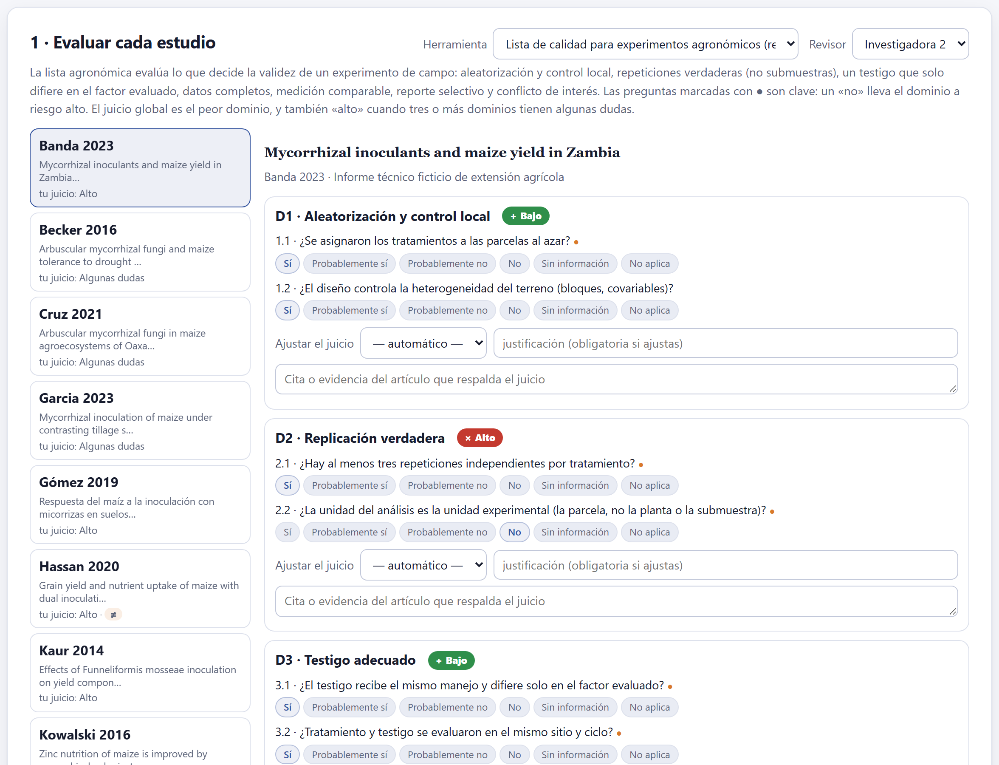
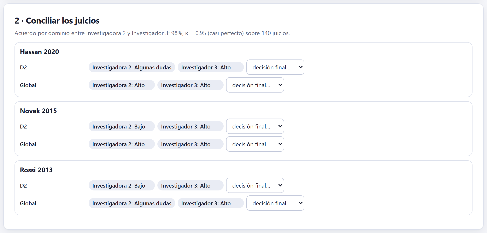
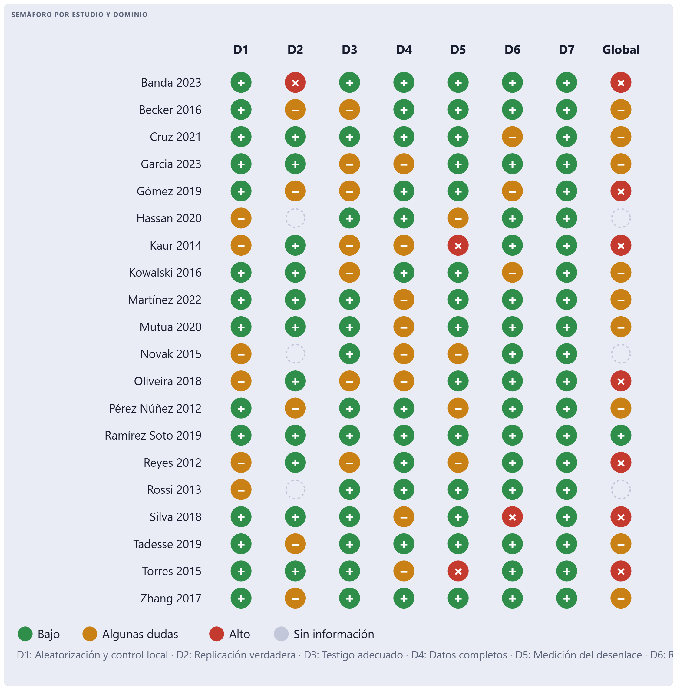
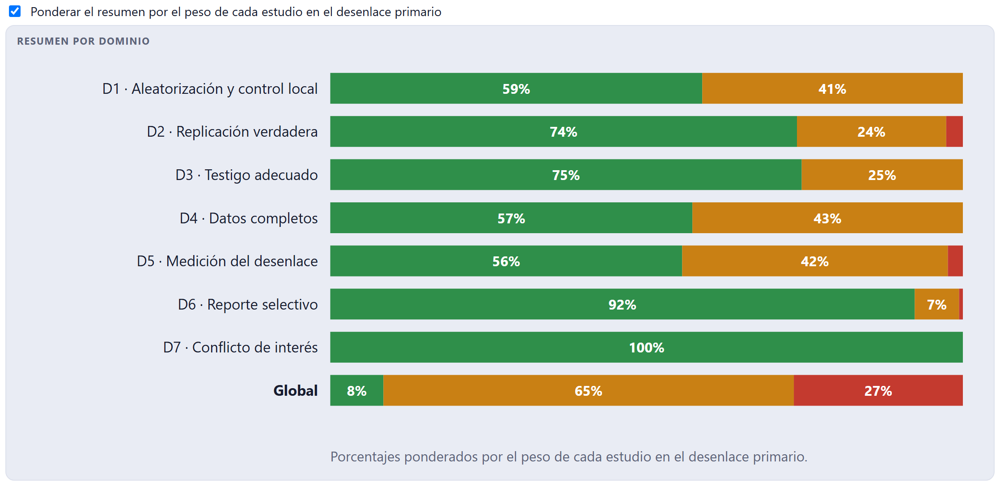
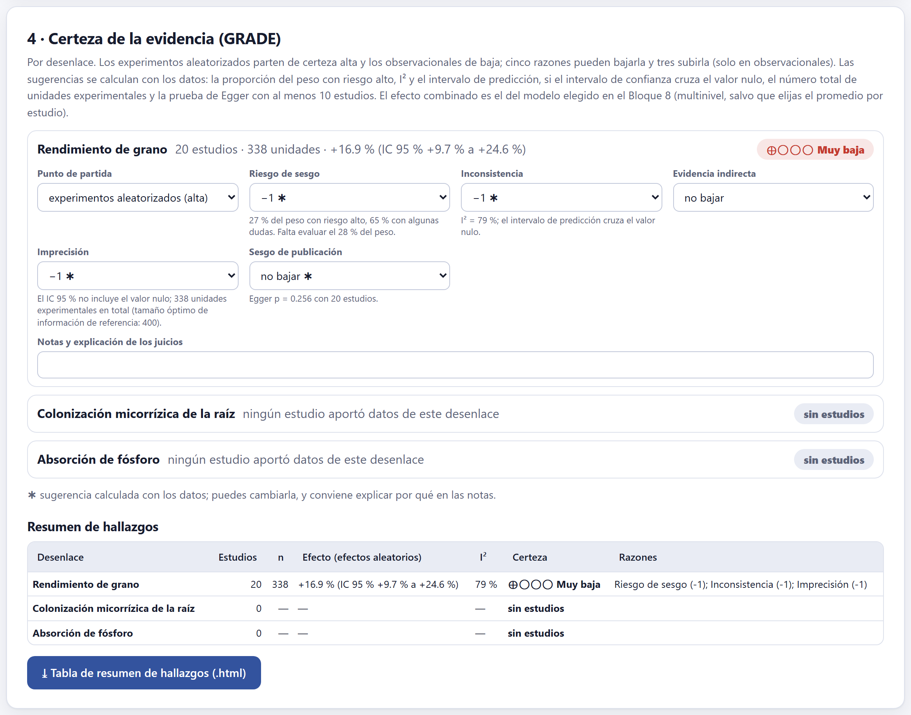

Cada estudio incluido se evalúa por dominios con preguntas guía; la app propone el juicio de cada dominio y tú lo confirmas o lo ajustas con una justificación. Los juicios de dos revisores se concilian, alimentan los gráficos de semáforo y de resumen, y entran —junto con la heterogeneidad, la precisión y el sesgo de publicación— en la certeza de la evidencia de cada desenlace con GRADE, que termina en la tabla de resumen de hallazgos.
La herramienta se elige en el protocolo (sección 2.6) y se puede cambiar en el menú Herramienta de la primera tarjeta. Una sola herramienta para toda la revisión: mezclar herramientas vuelve incomparables los juicios.
| Herramienta | Para qué estudios |
|---|---|
| Lista de calidad para experimentos agronómicos (recomendada) | Experimentos de campo, invernadero o laboratorio con tratamientos asignados. Siete dominios pensados para el diseño agrícola. |
| RoB 2 (Sterne et al. 2019) | Ensayos aleatorizados en el sentido clínico, con participantes asignados. |
| ROBINS-I (Sterne et al. 2016) | Estudios no aleatorizados de intervenciones. |
| Newcastle–Ottawa | Estudios observacionales de cohorte o de casos y controles. |
| Lista para estudios cualitativos | Evidencia cualitativa. |
| Dominio de la lista agronómica | Qué pregunta |
|---|---|
| D1 Aleatorización y control local | ¿Se asignaron los tratamientos al azar? ¿El diseño controla la heterogeneidad del terreno (bloques, covariables)? |
| D2 Replicación verdadera | ¿Hay al menos tres repeticiones independientes? ¿La unidad del análisis es la parcela, no la planta o la submuestra? |
| D3 Testigo adecuado | ¿El testigo recibe el mismo manejo y difiere solo en el factor evaluado, en el mismo sitio y ciclo? |
| D4 Datos completos | ¿Se reportan todas las parcelas o se explican las pérdidas? ¿Las pérdidas son parecidas entre tratamientos? |
| D5 Medición del desenlace | ¿Se midió igual en todos los tratamientos, con un método comparable? |
| D6 Reporte selectivo | ¿Se reportan todos los desenlaces, sitios y ciclos medidos? ¿El análisis parece fijado de antemano? |
| D7 Conflicto de interés | ¿El estudio lo financió o lo hizo el fabricante del producto evaluado? |

A la izquierda, los estudios con el juicio global del revisor activo (tu juicio: Alto, Algunas dudas…). A la derecha, cada dominio con sus preguntas guía, que se responden con Sí, Probablemente sí, Probablemente no, No, Sin información o No aplica. Con las respuestas, la app propone el juicio del dominio —Bajo, Algunas dudas o Alto— y lo muestra en la etiqueta de color.
Las preguntas marcadas con ● son clave: un «No» en una de ellas lleva el dominio a riesgo alto. «Probablemente no» y «Sin información», o un «No» en una pregunta que no es clave, lo dejan con algunas dudas. En la pregunta del conflicto de interés —¿lo financió quien vende el insumo?— lo que preocupa es el «Sí». El juicio global es el peor de los dominios, y también «alto» cuando tres o más dominios tienen algunas dudas: muchos problemas pequeños suman uno grande.
El juicio propuesto no es obligatorio: Ajustar el juicio lo cambia, pero pide una justificación. Y cada dominio tiene un campo para la cita o evidencia del artículo que respalda el juicio —«Materiales y métodos: “se muestrearon cinco plantas por parcela y se analizaron como repeticiones”»—: con ella, otro revisor puede comprobarlo sin releer el artículo.

Con dos revisores, la tarjeta da el acuerdo por dominio —porcentaje y kappa sobre todos los juicios— y lista solo los dominios en que difieren, con el juicio de cada revisor y un menú de decisión final…. La decisión final es la que usan los gráficos y GRADE.
En el ejemplo, los revisores coinciden en el 98 % de 140 juicios (κ = 0.95, casi perfecto), pero Hassan 2020, Novak 2015 y Rossi 2013 siguen sin conciliar: por eso el Bloque 10 marca este bloque en curso (85 %) y el informe sale como borrador. Aparecen como círculos vacíos en el semáforo.


El semáforo muestra cada estudio en cada dominio; el resumen, qué fracción de la evidencia está en cada nivel. Con la casilla Ponderar el resumen por el peso de cada estudio en el desenlace primario, cada estudio cuenta según su peso (la inversa de la varianza de sus efectos) en vez de contar uno; así se ve si el riesgo alto está en los estudios que mandan en el resultado o en los marginales. Los dos gráficos se exportan con el botón ⤓ de su esquina, y ⤓ Juicios por estudio (.csv) descarga la tabla completa.

GRADE (Guyatt et al. 2008) califica la certeza por desenlace, no por estudio. Los experimentos aleatorizados parten de certeza alta y los observacionales de baja; cinco razones pueden bajarla uno o dos niveles y tres pueden subirla, solo en observacionales. El resultado es alta (⊕⊕⊕⊕), moderada (⊕⊕⊕◯), baja (⊕⊕◯◯) o muy baja (⊕◯◯◯). La app sugiere cada juicio con los datos, lo marca con ✱ y dice por qué:
| Razón | Cómo sugiere la app |
|---|---|
| Riesgo de sesgo | −2 si más del 75 % del peso tiene riesgo alto; −1 si lo tiene la mitad o más, o si alto y algunas dudas suman más del 80 %. Se calcula sobre los estudios ya juzgados, y avisa cuánto peso falta por juzgar. |
| Inconsistencia | −1 si I² supera 75 %, o si supera 50 % y el intervalo de predicción cruza el valor nulo cuando el de confianza no lo hace. |
| Evidencia indirecta | No se sugiere: depende de si la población, la intervención o el desenlace de los estudios son los de tu pregunta. Lo decides tú. |
| Imprecisión | −1 si el IC 95 % incluye el valor nulo, o si el total de unidades experimentales es menor que el tamaño óptimo de información de referencia (400); −2 si pasan las dos cosas. |
| Sesgo de publicación | −1 si la prueba de Egger da p < 0.10 con al menos 10 estudios; con menos, no se evalúa y se anota. |
| Efecto grande, dosis–respuesta, confusión que reduce el efecto | Solo en observacionales; los decides tú. |
El efecto que acompaña cada desenlace es el del modelo elegido en el Bloque 8 —multinivel, salvo que elijas el promedio por estudio—, el mismo que citará el manuscrito. Un desenlace del protocolo sin datos aparece como sin estudios: eso también se reporta.
Cada ✱ es un punto de partida calculado; el juicio es tuyo. Si lo cambias, explica por qué en Notas y explicación de los juicios: la nota aparece en la tabla de resumen de hallazgos, y los árbitros la leen.
Debajo, la tabla de resumen de hallazgos: una fila por desenlace, con el número de estudios, las unidades experimentales, el efecto con su IC 95 %, I², la certeza y las razones. Es la tabla que las guías recomiendan poner en el cuerpo del artículo; ⤓ Tabla de resumen de hallazgos (.html) la descarga lista para imprimir o copiar, y en el Bloque 9 entra al manuscrito con {{table:sof}}.
«Todavía no hay estudios incluidos (Bloque 5)»; «Declara desenlaces en el protocolo o extrae efectos en el Bloque 6»; el aviso de una justificación faltante al ajustar un juicio; y, en GRADE, «Con menos de 10 estudios la asimetría del embudo no se puede evaluar; se deja sin bajar y se anota».